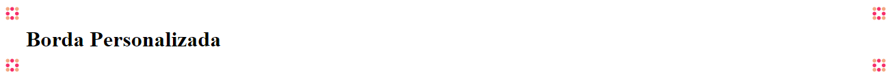

Usamos no estilo a propriedade border-image-source: url (''). A borda fica assim:
Repetimos a imagem com o parâmetro border-image-repeat com o valor repeat (temos o valor stretch que estica a bolinha).
Agora precisamos fatiar. Usamos a propriedade border-image-slice e inserimos um número qualquer, depois vamos no DevTools ajustamos e copiamos e colomos os valores no nosso código.
Podemos usar um shorthand com o border-image na ordem: border-image-source, border-image-slice e border-image-repeat.
border-image: url('borda.png') 27 repeat;
Obs: Não podemos tirar o parâmetro boder (1px solid transparent), se tirarmos não irá funcionar o border-image. Nem todos os navegadores são compatíveis com o border-image.